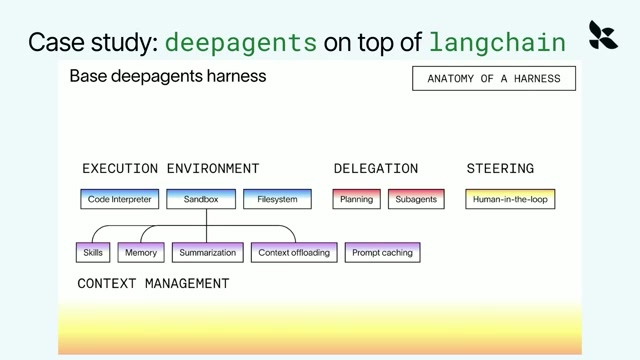
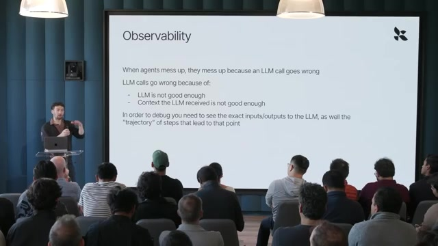

1. 从 Agent 循环理解 Harness
00:00—02:42｜要拥有哪些层面的智能？
开场介绍把问题放在“让模型成为虚拟协作者”的背景下。Harrison Chase 随后用三个部分描述 Agent：模型、上下文，以及组织二者运行的 Harness。模型层的自主性包括切换模型的能力，既减少绑定，也方便采用更合适的模型；上下文层包括记忆、知识和历史会话，它们为行为提供个性化信息和约束。
Harness 的核心职责是在正确的时点，把合适的上下文送入模型。它组织固定指令、动态信息和外部系统交互；工具运行产生的新观察，又成为下一次模型调用的上下文。因此它管理的是持续发生的信息流，而不只是第一次调用时的一段提示词。
02:43—04:26｜最小架构与可定制的插入点
最小 Agent 循环可以概括为：收到请求 → 模型生成 → 如有工具调用则执行 → 把观察交回模型 → 继续运行。讲者认为，大量复杂 Agent 仍建立在这个简单循环之上，差异来自循环周围加入的机制。
他将 LangChain 描述为基础 Harness，将 Deep Agents 描述为建立在其上的、更通用且模型无关的系统，包含文件系统、Skills 和子 Agent。通过 middleware，可以在 Agent 启动前、每次模型调用前，以及模型调用和工具调用的外围插入逻辑。编码 Agent 中的 hooks、plugins，也承担类似的扩展作用。
04:27—05:39｜两个具体的上下文管理例子
- 摘要压缩：在模型调用前检查上下文长度，过长时先摘要，再继续调用。插入位置由机制决定：它要改变下一次模型实际看到的输入。
- 上下文卸载：处理体积很大的工具输出，将其移出直接进入窗口的内容。讲者把它放在包装工具调用这一层讨论；核心是控制工具结果如何回流，而不改变 Agent 循环的基本形式。
画面把完整 Harness 的能力分为：执行环境（代码解释器、沙箱、文件系统）、任务委派（规划、子 Agent）、人工介入，以及上下文管理（Skills、记忆、摘要、卸载、提示缓存）。这些是可组合的能力，不代表每个任务都需要全部启用。

2. 何时使用现成系统，何时定制
05:40—06:54｜通用循环与显式认知架构
另一条定制路线，是显式规定认知流程。讲者用两个例子说明：深度研究先拆分子问题，再并行展开执行；代码审查机器人则采用专门设计的处理步骤。2023—2024 年模型较弱时，这类流程更常见；随着模型能力提升，一些控制被吸收到通用循环及其扩展中，但特定业务仍会需要明确的阶段、检查点和执行路径。
建议的起点是通用 Harness，以较快获得可用结果；当目标用例逐步清晰，再加入有针对性的检查和约束。这里的选择存在连续谱：直接使用、增加 middleware 或 hooks、设计完整流程。
06:55—09:05｜按任务分布判断，按子能力保留适配
讲者将“现成还是自建”与任务是否接近模型训练分布联系起来：越接近其受训任务，现成 Harness 越可能有效；越偏离，越可能需要调整。视频举出的现成系统包括 Claude Code、Claude Agent SDK 和 Codex；这些名称用于说明当时的生态，不能据此推定产品今天的兼容范围。
法律 AI 是关键反例：整个法律任务可能超出通用模型擅长的分布，但其中“编辑文件”仍是模型通过强化学习训练过的子任务。因此，顶层可以定制法律工作流，底层却应该尽量沿用该模型熟悉的文件编辑工具方式。
他指出，不同模型在各自 Harness 中受训的文件编辑方式不同；Deep Agents 用 model profiles 根据模型切换编辑实现。值得学习的原则是：整体任务需要定制，并不意味着所有局部能力都应重新设计。模型无关的编排层，仍可能需要模型相关的工具适配。
3. 评估定义目标，可观测性解释失败
09:06—11:09｜用自己的任务定义“好”
讨论从架构转向验证：改模型、改 Harness 或改上下文，都需要知道系统内部发生了什么，以及结果是否变好。讲者借组织级评估、轨迹与反馈的所有权，说明持续学习闭环如何积累业务价值。
对关键业务 Agent，私有 benchmark 有两项直接作用：发现回归，以及作为迭代优化的目标。评估不只比较模型，也可以比较 Harness、推理投入和不同系统组合。讲者认为 Harbor 正成为常用的开源评估运行器；这是演讲中的行业判断，不是本笔记独立验证的市场结论。
11:10—12:27｜Harbor 如何把任务变成可运行的评估
一个数据集包含多个任务，每个任务可以在独立沙箱中运行。对于会修改文件、依赖环境状态的长程 Agent，环境本身就是评估的一部分；不能只拿一道文本题替代完整任务。
| 组成 | 视频中的作用 |
|---|---|
| Environment | 定义 Agent 的运行环境，可通过 Dockerfile 构建沙箱，支持任务隔离及并行。 |
| Solution | 参考解，用于核查任务和评估设置是否合理。 |
| Tests / verifier | 定义评分，可运行代码、单元测试、LLM judge，乃至 Agent judge。 |
| instruction.md | 提供给被测 Agent 的任务指令。 |
把环境、指令和验证器捆成任务，再让不同模型与 Harness 的组合运行，就能比较它们对同一业务问题的表现。
12:28—13:03｜结果至少看质量、时延与成本
LangSmith 演示展示实验列表、反馈分数及逐任务结果，并可跟踪 latency 和 tokens。一个系统准确率更高，却可能更慢或消耗更多，因此不能只用单一成功率判断工程价值。视频没有给出足以重建数值结论的结果表，本笔记也不补造跑分。
13:04—14:37｜排查输入与形成输入的路径
讲者把模型调用失败分成两类：模型能力不够，或模型收到的上下文不够好；他认为后者经常是原因。调试时既要查看具体调用的输入输出，也要追查上下文怎样累积：此前执行了哪些工具、产生了什么结果、哪些结果进入了当前窗口。
Trajectory 与 trace 的区别：消息轨迹便于快速阅读“用户请求—工具调用—回答”的过程；完整 trace 则允许进一步钻取调用细节。产品界面可以折叠工具调用以提高可读性，但工程排错仍需要底层记录。

4. 从运行轨迹构建持续改进闭环
14:38—16:19｜反馈是数据筛选的关键
持续改进的基本链条是：运行 Agent → 收集 traces → 筛选整理数据 → 在数据上做实验。难点不只是记录日志，而是识别哪些行为成功、哪些失败，哪些模式值得投入修复。
反馈有两条来源。第一是用户及环境：讲者强调 UX 设计的重要性，因为用户未必主动点击赞踩，交互流程的设计却可能产生有用的反馈信号。视频没有展开具体界面方案，不宜把某种行为信号的实现归给他。
第二是合成反馈，即对线上轨迹运行评估器。若每条 trace 都由昂贵的大模型判断，成本会迅速累积；讲者提及与 Harvey 的相关实验，并给出几种路径：微调小语言模型（SLM）、用现成模型配定制提示词，或在规则足够明确时直接用代码。他没有在本片报告具体降本比例或评估精度。
16:20—17:26｜闭环可以改变 Agent 的三个部分
| 被更新部分 | 对应方式 | 要追问的问题 |
|---|---|---|
| Harness | Harness engineering | 编排、工具或检查机制是否需要调整？ |
| 模型 | Fine-tuning | 是否存在需要从数据中学习的能力缺口？ |
| 上下文 | Memory | 哪些经验应成为后续任务可用的信息？ |
表中第三列是便于学习的归纳。讲者强调，相同的轨迹与反馈流程可以支持三类更新，LangChain 团队在这里主要关注 Harness 的改进。所谓自动化闭环，需要把“发现问题、筛选证据、运行实验、提出修复”这些耗时工作尽可能自动化。
17:27—19:18｜LangSmith Engine 演示
Engine 是运行在轨迹之上的后台 Agent。演示中，它通过 LangSmith CLI 访问和筛选 traces，结合提示词与子 Agent 探索数据、寻找共同问题，然后形成 issue boards。问题记录提供描述和支持它的 trace 链接，使维护者能够回到证据。
演示显示建议可以涉及提示词、上下文指令，以及加入 Harness 的代码。理解重点是把分散的轨迹转成可审查的问题与改进建议。视频展示了这一产品流程，不能据此推断所有修复都已自动部署、自动验证或必然提升质量。
5. 结尾问答：用对比实验学习，保留控制
19:19—20:44｜用 Engine 改进 Engine，以及 Codex 案例
主持人追问能否让 Engine 分析自己的执行。Harrison 表示团队已在这样使用它，并通过 Slack 接收有关自身运行的报告。团队还构建了 Harbor 格式的 Issue Bench，持续比较不同模型和 Harness。
最具体的例子来自 Deep Agents、Codex 与 Claude Code 的横向对比：团队观察到，Codex 会积极为自己编写许多小脚本，用来分析 traces，这种策略表现很好。他们随后专门把这种做法吸收到 Engine 的 Harness 中。
这个案例说明 benchmark 除了输出排名，也可以帮助发现可迁移的执行策略。真正有用的学习过程是：让不同系统做同类任务，检查轨迹中的差异，再把有效行为纳入自己的系统。视频未给出迁移后的量化增益，因此不能把这段描述当作严格的因果实验。
20:45—22:41｜Harness 会统一，还是继续分化？
讲者没有给出确定预测。他观察到通用系统已能覆盖很多基础任务，文件系统、子 Agent 等能力也已经形成可复用经验，所以仍建议从现成系统开始。但任务越偏离训练分布，就越可能需要定制。
可预测性是独立的定制理由。金融服务客户的例子表明，即使通用 Agent 能力很强，组织也可能更偏好明确的认知架构，以便控制执行过程。选择不是简单的自建或采购，而是从直接使用，经 hooks 和 middleware 扩展，到完整受控工作流的连续谱。
22:42—23:57｜能力趋同不等于工具实现统一
不同模型实验室都在加强编码能力，相关 Harness 可能因此趋同；但文件编辑这样的小环节仍存在明显差别。若某家实验室重点进入生物等领域，也可能带来新的专门化 Harness。讲者明确承认这些变化尚难预测，因此最后回到评估与可观测性：持续测量，才能判断系统是否仍适合自己的任务。
读完后可执行的检查
先把业务任务和验证方式定义清楚；以现成 Harness 建立基线；查看失败时模型实际收到的上下文；区分整体工作流缺陷与模型相关工具适配；对改动同时测质量、时延和成本；将反复出现的生产问题沉淀为回归任务。这是基于本片整理的工程检查顺序，不是演讲原文中的固定清单。
阅读边界：本页是按原视频顺序重组的学习笔记，保留主要机制与案例，不是逐字稿。时间戳是定位锚点，可能存在秒级偏差。产品状态与行业判断均对应演讲当时；演示代码文字在 640×360 源视频中较小，因此不重建无法清晰辨认的具体补丁。全片口述已核对至结束，另检查了覆盖全时间轴的 24 张画面及选定原始帧。